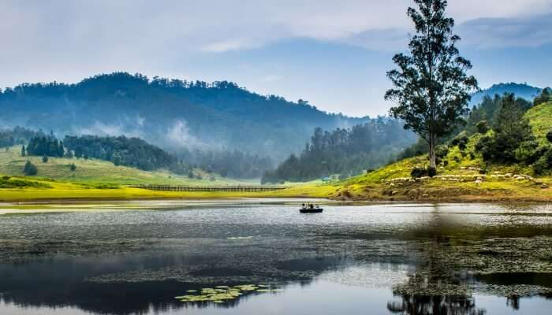
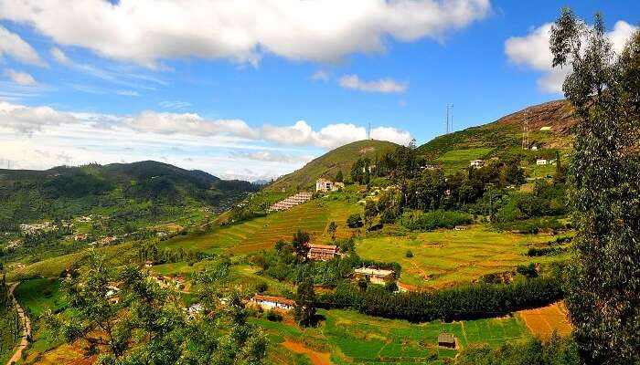
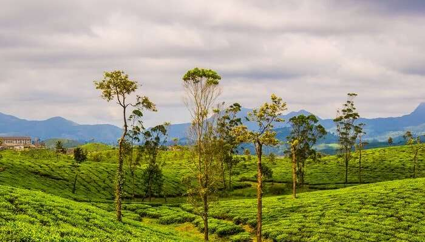

To experience the exotic arts, sumptuous cuisine and colourful culture, one destination that you can think of are Tamilnadu. Home to several beautiful and attractive hill stations, pristine beaches, agricultural lands and temple towns. Hill stations in Tamilnadu are popular crowd pullers and a place where most prefer going to for a relaxing holiday. Verdant greenery, natural beauty, plenty of wildlife and a pleasant climate is what you will experience in the hills. While some hill stations like Ooty and Kodaikanal are at the top of most itineraries, there are others not as popular but promise to offer a unique experience away from the crowd.
1.Kodaikannal

Kodaikanal (Tamil: [koɖaɪkkaːɳal]) is a hill station which is located in Dindigul district in the state of Tamil Nadu, India. Its name in the Tamil language means "The Gift of the Forest".Kodaikanal is referred to as the "Princess of Hill stations" and has a long history as a retreat and popular tourist destination.Kodaikanal Main Town covered with mist Boating in Kodaikanal Lake Kodaikanal was established in 1845 as a refuge from the high temperatures and tropical diseases of the plains. Much of the local economy is based on the hospitality industry serving tourism. As of 2011, the city had a population of 36,501..
2.Ooty

Ooty (About this soundlisten (help·info)), officially known as Udagamandalam (also known as Ootacamund About this soundlisten (help·info); abbreviated as Udhagai), is a town and a municipality in the Nilgiris district of the Indian state of Tamil Nadu. It is located 86 km north of Coimbatore and 128 km south of Mysore and is the headquarters of the Nilgiris district. It is a popular hill station located in the Nilgiri Hills. Local residents call it Queen of Hills. It was the summer capital of Madras Presidency .
3.Valparai

Valparai (originally known as Poonachimalai) is a Taluk and hill station in the Coimbatore district of Tamil Nadu, India. It consists of Anamalai Tiger Reserve (earlier known as Indira Gandhi Wildlife Sanctuary and National Park (IGWLS&NP) and prior to that as Anaimalai Wildlife Sanctuary). It is located 7,102 feet (2,165 m) above sea level on the Anaimalai Hills range of the Western Ghats. The foothill starts exactly from Monkey Falls which is at a distance of 38 kilometres (24 mi) to Valparai. The route to Valparai from the foothills consists of 40 hairpin bends.